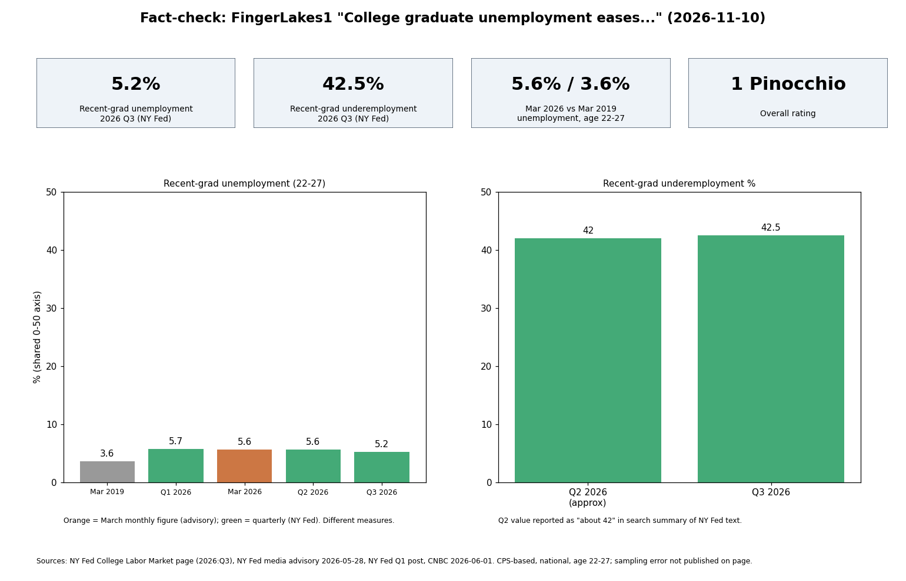

Every number in the piece matches NY Fed sources: 5.2% unemployment and 42.5% underemployment in 2026 Q3, 5.6% (March 2026) vs 3.6% (March 2019), ages 22-27, national data. The one attributed quote, "low-paid or unskilled work", could not be found verbatim on the NY Fed page I could read.
| Claim | Verdict | Source |
|---|---|---|
| Q3 2026 recent-grad unemployment 5.2%, lowest in over a year | Supported (Fed's wording) | NY Fed page |
| Underemployment 42.5%, edged up | Supported; Q2 about 42% | NY Fed page |
| 3.6% (Mar 2019) to 5.6% (Mar 2026), May advisory | Supported; advisory dated 2026-05-28 | NY Fed media advisory; CNBC |
| Recent grads aged 22-27, bachelor's+ | Supported | NY Fed page |
| National, not NY or college specific | Supported ("All data presented here are national measures") | NY Fed page |
| Underemployment = job typically not requiring degree | Supported | NY Fed page |
| Quote "low-paid or unskilled work"; some gain experience first | Not verbatim on page; substance supported (page notes many non-college jobs are "fairly skilled and well paid"; Abel and Deitz staff report on temporary underemployment) | NY Fed page; Staff Report 749 |
Confidence: medium-high on numbers (primary source, two cross-checks); low on the quote.